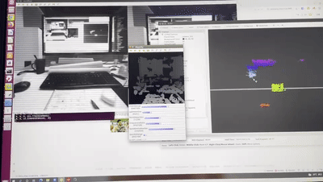
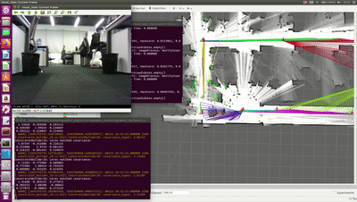
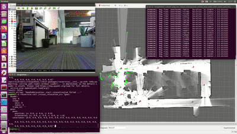
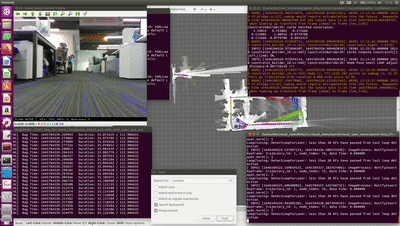
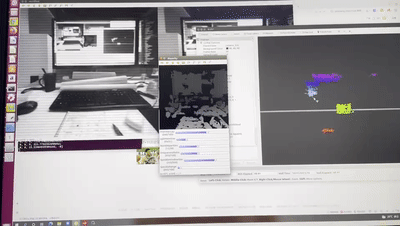
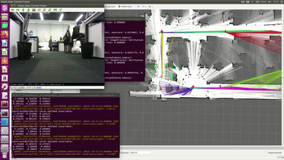
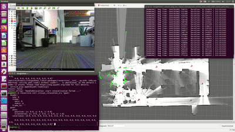
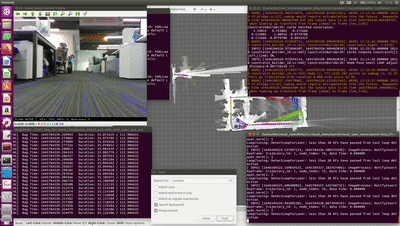

李涛
机器人算法工程师 / 广州
基本信息
- 李涛 / 男 / 28岁
- CET-6
- C语言二级证书、C1驾照
联系方式
- (+86)188-2642-5977
- 280947007@qq.com
- renmengqisheng.github.io/
教育经历
-
华南理工大学 - 控制工程专业（硕士）
-
专业排名前40%，多次获得华南理工大学三等奖学金，获得"华为杯"第十四届中国研究生数学建模竞赛三等奖，第十一届建设工程与管理创新竞赛二等奖
-
硕士论文：基于多鱼眼相机系统的视觉SLAM研究，设计实现了一种多鱼眼视觉SLAM算法，包括多鱼眼相机系统的标定、鱼眼图像去畸变、多目视觉信息融合等，提高了系统定位与建图的精度和鲁棒性。
-
-
广东工业大学 - 自动化（卓越工程师班）专业（本科）
-
专业排名前5%，多次获得广东工业大学二等奖学金，获得优秀学生干部奖学金1次
-
学士论文：基于Tensorflow的神经网络仿真研究，通过手写体数字识别实验和混合音分离实验，对基于TensorFlow实现的BP、RNN和LSTM神经网络进行训练和测试，根据仿真结果对比分析各神经网络的性能。
-
专业技能
熟悉 C/C++、Python、Shell脚本，熟悉常见的数据结构与算法，理解面向对象思想
熟悉Linux C++开发和ROS编程，熟练使用CMake、git、vim、gdb/coredump、VScode等工具
熟悉Cartographer、A*、Dijkstra、DWA、TEB等开源SLAM定位导航算法，有丰富的调试和使用经验
熟悉ORB-SLAM2/3、VINS-Mono/Fusion等vSLAM算法，掌握多传感器融合方法
熟悉图像处理、多视图几何、非线性优化、KF/EFK、传感器标定等理论方法
熟悉OpenCV、Eigen、g2o、Ceres、PCL、librealsense2、libcurl、libjson、yaml-cpp等工具库
熟练使用OCamCalib、Kalibr、evo、rpg_trajectory_evaluation等标定评估工具
掌握80C51、MSP430G2553、TM4C123G、STM32F103、树莓派3B等嵌入式平台的使用
工作经历
-
暗物智能科技（广州）有限公司－机器人算法研究员
- 作为轮足机器鹅项目的主要成员，参与导航供应商寻源验收和客户支持工作，负责机器鹅本体算法功能开发和工程部署，包括状态机管理，异常检测处理机制，设备OTA升级，系统日志回传，多机动作同步等。已在小批量产机器中得到有效验证。
- 作为自研轮式导航系统的核心成员，参与从零开始到商业化水平的研发全过程，负责建图、定位、重定位、导航和视觉辅助等核心功能和工程接口的研发，融合激光、IMU、轮速计、视觉等多传感器信息，导航定位性能优于同期竞品。
- 独立负责自研足式导航系统从零开始到工程化落地的研发全过程，包括视觉定位、导航、局部立体避障和双足运动控制等，在视觉特征较好的室内场景(如工位、展厅、会议室等)进行了有效测试验证。
-
纽劢科技(上海)有限公司－视觉SLAM实习生
- 复现ICRA2019论文ROVO，优化公司用于AVP系统的多目vSLAM代码。
-
湖北三环智能科技有限公司－视觉实习生
- 调研主流vSLAM算法，深入学习研究ORB-SLAM2，修改相关代码建立先验地图用于定位。
- 基于OpenCV实现光斑检测和双目测距代码，辅助港口重载AGV停车对准。
项目经验
-
自研轮式导航系统
- 技术栈：
-
Linux C++开发、ROS编程、多传感器融合、RTAB-Map、ORBSALM2、GMapping、Cartographer、AMCL、move_base、Ceres、g2o、PCL、OpenCV、DBoW2、Umeyama算法等
- 项目简述：
-
从零开始自研轮式导航系统，包括建图、重定位、定位、导航、立体避障、虚拟轨道导航、虚拟墙、自主回充和视觉辅助等核心功能，实测至少支持2万+平方米，导航性能优于同期竞品步科思底盘。
- 职责业绩：
-
1、独立完成差分轮机器人底盘里程计ROS代码开发，协助嵌入式同事完成里程计代码移植与电机驱动开发。轮子半径及轮间距标定后，里程计误差小于1%。
2、复现基于RGB-D相机和ROS导航包的轮式导航demo。尝试两种建图方案：(1)使用RTAB-Map融合里程计和RGB-D数据进行视觉SLAM，将3D稠密点云转换成2D占据栅格地图；(2)使用RGB-D数据模拟单线激光数据，融合里程计进行激光SLAM；最后基于AMCL和move_base完成导航避障。
3、负责激光雷达、IMU等传感器和激光建图方案的调研选型。最终确定了轮式导航的软硬件系统方案，搭建了用于验证轮式导航算法的实验平台。
4、Cartographer建图算法优化、功能开发与性能评估。通过引入多约束和长走廊检测剔除误回环，以及开发手动回环、撤销/恢复回环、更新建图和离线"拉链式"重影消除等功能，解决了建图重影问题，使相似场景(如长走廊)和复杂场景建图重影率大幅降低，建图成功率接近 100%。
5、基于图优化的激光重定位和定位功能开发。重定位功能包括局部和全局重定位，采用多种策略加速scan-map匹配，在环境小幅变化的场景下准确率超过90%；定位时通过引入重叠区域计算，加速与历史地图的匹配，有效降低定位误差，鲁棒性与稳定性均优于AMCL；针对长走廊进行专门处理，防止误匹配导致定位出错，同时设计了定位丢失判断机制，进一步提高重定位/定位的可信度。
6、视觉辅助功能开发。绑定图像与激光信息，融合里程计数据，通过DBoW2加速视觉特征匹配和建立视觉先验地图，辅助激光快速完成大场景的回环检测和全局重定位，显著提升回环和重定位效率和质量。
- 技术栈：
-
轮足机器鹅
- 技术栈：
-
Linux C++开发、ROS编程、Shell脚本编程、网络编程、多传感器数据融合、姿态解算、时序同步、异常检测与处理、ELK框架
- 项目简述：
-
用于大型商场巡检和群体舞蹈的中型仿生机器鹅，具有轮足双模式，整机方案与第三方合作。
- 职责业绩：
-
1、参与导航供应商寻源验收和客户支持工作，包括技术方案评估、指标讨论制定、整机功能测试、现场问题调试等，及时修复系统bug，响应客户新需求。
2、摔倒姿态检测开发。针对双足行走出现的摔倒情况，使用IMU姿态解算判断所处状态，触发自主起立的异常恢复功能，准确率100%。
3、抱起状态检测功能开发。针对抱起会导致定位导航失败、易折断腿部等问题，结合多种传感器信息进行准确检测，触发恢复/保护机制，并检测放下。申请相关发明专利一项。
4、轻微移动检测开发。针对人为旋转移动、轮子严重打滑等情况容易导致定位丢失的问题，结合IMU和里程计的特点进行有效判断，触发重定位恢复机制。
5、状态管理器开发。根据产品功能需求，讨论定义机器鹅所有可能状态，结合接收指令和多传感器信息完成状态转移，以及检测处理异常数据、急停、超低电量等异常情况。
6、OTA升级与日志回传开发。使用libcurl库请求服务器下载最新安装包，支持指定设备ID升级和断点续传，通过shell脚本完成后续升级。基于ELK架构实现日志回传。目前已完成约100次升级(含内部测试)，集中为客户升级11次，协助查找客户反馈问题原因n次。
7、多机动作同步时序分析与处理。针对多机动作不协同的情况，与上层应用协作，完成各环节的耗时标化，实现动作执行基本一致。
- 技术栈：
-
自研足式导航系统
- 技术栈：
-
Linux C++开发、ROS编程、librealsense2库、Basalt、ORBSLAM3、VINS-Fusion、传感器标定、双目测距、Dijkstra、TEB
- 项目简述：
-
自研轮足机器鹅在足式模式有局部区域导航的需求，其搭载了单线激光雷达、IMU和双鱼眼相机等传感器，独立负责足式导航系统从零开始到工程化落地的研发全过程，包括视觉定位、导航、避障和运动控制等功能。
- 职责业绩：
-
1、调研足式建图、定位和导航整体方案，设计实现自研足式导航系统的整体框架。
2、视觉定位方案调研与工程化实现。根据产品需求和行走摇晃的特点，提出并落实VIO定位方案，包括硬件选型与标定、主流VIO算法复现和ROS接口开发。
3、导航避障功能开发。基于move_base功能包使用改进的Dijkstra算法实现快速全局路径规划，利用IMU对激光数据进行重力对齐，使用TEB算法规划局部路径进行避障，导航效果较好。
4、运动控制器开发。机器鹅的双足运动模型与轮式差分模型不同，将速度指令解析为双足舵机的执行指令，实现对双足的运动控制。
5、三维点云和立体避障开发。标定相机参数矫正鱼眼图像畸变，利用双目测距原理生成三维点云，并使用IMU姿态进行重力对齐，提供三维障碍物信息，基于move_base完成避障。
- 技术栈：
-
多目视觉SLAM优化
- 技术栈：
-
Linux C++开发、ORBSLAM2、相机标定、图像拼接、双目测距、g2o、多目融合
- 项目简述：
-
参照ICRA2019论文ROVO的做法，利用投影模型和立体匹配优化多目SLAM定位精度。
- 职责业绩：
-
1、标定车载多目鱼眼相机的内外参，并利用内外参拼接全景俯瞰图检验标定结果。
2、针对鱼眼图像畸变严重、误匹配多，以及普通针孔模型FOV较小，采用双针孔投影模型去畸变。
3、结合相邻鱼眼的外参关系，分别对相邻鱼眼进行双目校正，并参照ROVO的策略进行双目匹配。
4、推导模型雅可比公式，定义新的g2o边，深入修改公司SLAM代码前、后端相关代码，并在公司数据集进行验证。
5、针对公司SLAM代码初始时刻不稳定的问题，结合上述模型，采用立体视觉方案进行优化。
- 技术栈：
自我评价
1、技术知识面广，能降低不同技术栈之间的沟通成本，涉及电路设计、 8/32位MCU嵌入式开发、Linux C/C++开发、ROS开发、SLAM算法、导航算法、ML/DL基本原理等软硬件相关技术。 2、积极上进，有较强的自我驱动力、学习能力和开发调试能力，不断学习完善自身的技术栈。 3、良好的分析和解决问题能力，逻辑思维清晰严谨，协作能力和抗压能力强。
附件
 多机动作同步演示

双目三维点云生成

视觉辅助激光回环，建图过程中自动检测回环，检测速度优于激光

视觉辅助激光重定位，发布重定位命令，完成后自动跳到正确位置

视觉辅助激光更新建图，自动检测回环后合并新(左上角)旧(右下角)地图
多机动作同步演示

双目三维点云生成

视觉辅助激光回环，建图过程中自动检测回环，检测速度优于激光

视觉辅助激光重定位，发布重定位命令，完成后自动跳到正确位置

视觉辅助激光更新建图，自动检测回环后合并新(左上角)旧(右下角)地图